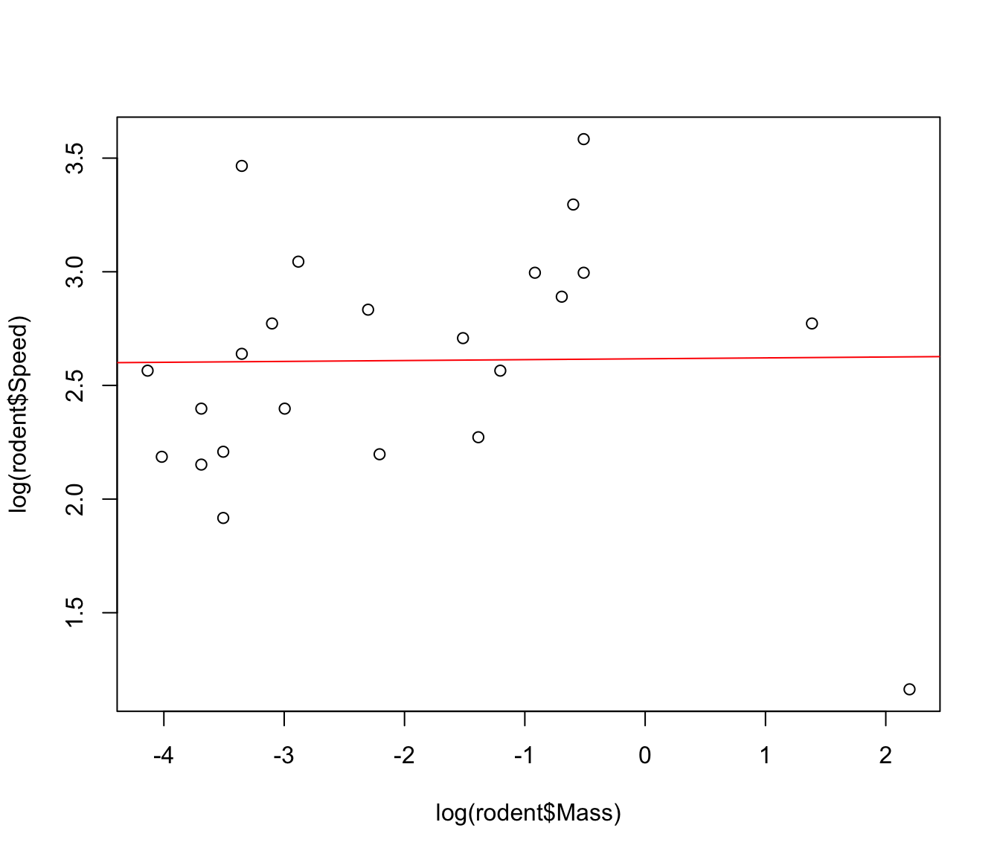
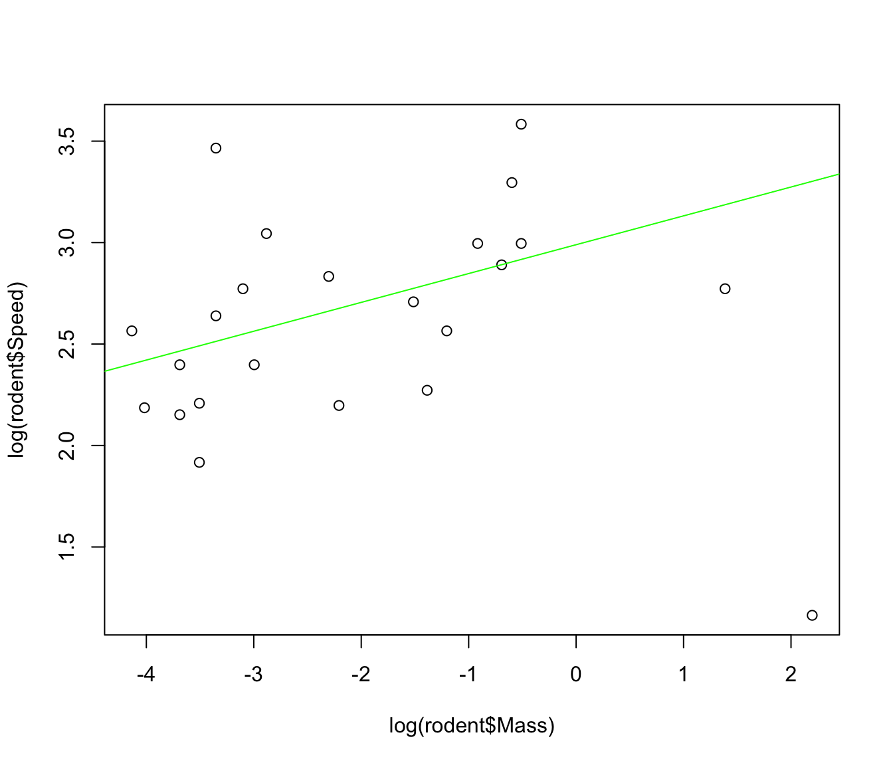

2.2 A taste of R
Example: Mass and speed in quadrupedal rodents
In an investigation of the relationship between mass (kg) and speed (km/hr) in mammals, Garland (1983) collected information from published articles on these two variables for a large number of different species. These measurements were recorded for a variety of four-footed rodents. (The common names of the species are taken from Corbet & Hill, 1986.) Notice that the measurements are not all recorded to the same level of accuracy since the results have been collated from the work of a number of different scientists.Is it true that the bigger you are the faster you can run?
We will use this simple example to explore how R operates. This will include the idea of a script where ‘R’ instructions can be typed and, when required, copied into the Console window for ‘R’ to execute.
The majority of datasets in this book are read directly from external sources and Section 2.4 below shows how this can be done conveniently. Some datasets, such as the rodent one described above, are not available externally and these are provided within the add-on package rpanel. If you haven’t yet installed this package, follow the instructions in the Getting started with R page which immediately precedes Chapter 1.
The first thing to do is to set up a new script. If you are using RStudio, this can be done from the menu: File > New file > R Script. (The detailed wording of the menu items may change with the particular computing system you are using.) Now type the following text into this script window.
It is strongly recommended that all R instructions are placed in a script, to build up a record of your analysis which can be edited and re-executed as needed. As discussed in Section 2.1, this provides a very convenient and reproducible workflow. Instructions can easily be copied and pasted from the script window into the console window. (This can be done efficiently by placing the cursor on the line of interest, or highlighting a block of code, and then using a keystroke combination such as Ctrl + Enter or command + Enter, although this may depend on your particular computer system.) Copy and paste the data instruction now.
In R, data is a function designed to make a dataset available, in this case the rodent dataset from the rpanel package. It is helpful to think of R as a collection of functions. A function is something which accepts input of some kind and creates an output or action of some kind. The inputs are specified through the arguments of the function. Here the first argument is the name of the dataset. Functions often have many arguments. In this case, the second argument has been ‘named’ to identify that it refers to the ‘package’ argument, out of all the other arguments available. (If the package argument had been the second one in the definition of the function, we could have omitted naming it.)
There is no automatic response from R but the rodent dataset is now available in the object rodent. This has rows for each rodent and columns for each variable. It is referred to as a dataframe. We can see what is inside any object by typing its name in the console. (Alternatively, the object can be inspected by clicking on its name in the RStudio Environment window.)
## Mass Speed
## North American Porcupine 9.000 3.2
## Woodchuck 4.000 16.0
## Long-clawed ground squirrel 0.600 36.0
## Long-tailed souslik 0.600 20.0
## Eastern grey squirrel 0.550 27.0
## European souslik 0.500 18.0
## European red squirrel and Persian squirrel 0.400 20.0
## Belding's ground squirrel 0.300 13.0
## Rat 0.250 9.7
## American red squirrel 0.220 15.0
## Golden hamster 0.110 9.0
## Eastern American chipmunk 0.100 17.0
## Chisel-toothed kangaroo rat 0.056 21.0
## Meadow vole 0.050 11.0
## Least chipmunk 0.045 16.0
## Merriman's kangaroo rat 0.035 32.0
## Fawn hopping mouse 0.035 14.0
## Pine mouse 0.030 6.8
## Deer mouse 0.030 9.1
## White footed mouse 0.025 11.0
## Woodland jumping mouse 0.025 8.6
## North American meadow jumping mouse 0.018 8.9
## House mouse 0.016 13.0To explore the data, plots always provide a good starting point. The plot function is very powerful and adaptable. Here we give it two variables and a scatterplot is produced. Notice that we refer to variables inside the dataset by <dataframe name>$<variable name>. What does this plot tell us?

A noticeable feature is that the data are ‘bunched up’ at one end and stretched out at the other, making any underlying pattern difficult to see. It would be worthwhile considering a change of scale by applying the log transformation to both axes. The log transformation is often effective in dealing with data which are skewed in this manner but there is also a more reasoned justification in this example. Mass is proportional to volume, which is the product of three dimensions - length, breadth and height (when adopting a rather drastic simplification of rodent shape!). On the other hand speed refers to the distance travelled in unit time and so it is one-dimensional. When the log transformation is applied to a product it creates quantities which add together on the log scale. With some further thought on the mathematical relationships involved, there is a strong aregument for the appropritaeness of the log transformation. (You are invited to consider this further in one of the Exercises at the end of the chapter.)
The plot below shows this to be very effective at putting the data onto scales where the variation is more consistent. Notice that we do not need to create new variables containing the log transformed data. We can simply apply the log function inside our instruction. Note that this refers to logarithm to the base \(e\), the mathematical constant with value 2.7182…, and not to the base 10 (for which the function is log10).
plot(log(rodent$Mass), log(rodent$Speed))
model1 <- lm(log(Speed) ~ log(Mass), data = rodent)
abline(model1, col = 'red')
The instructions also fit a simple linear trend to the data. This is an example of a linear model which we will discuss in detail in Chapter 9. The lm function accepts a formula of the form <response variable> ~ <explanatory variable>. We can also conveniently specify the dataframe we are working with in the data argument.
The syntax of this instruction also makes an assignment by placing the result of the lm function into a new object with a name of our own choosing. The backwards arrow <- is how we make assignments in R. Objects can contain numbers, text, vectors of data, matrices, dataframes and many other things, some of them rather sophisticated. This is one of the more sophisticated cases as model1 now contains a fitted linear model.
The fitted model has been passed to the abline which is designed to draw straight lines. What should it do? This illustrates that R is an object-oriented system. The abline function recognises that the object which has been passed to it is a linear model with a single ‘explanatory’ variable. There is a method for that kind of object which locates the slope and intercept of the fitted line and draws that on the plot, with the colour set by the col argument.
The red line shows the effect of fitting a simple linear model. This is almost entirely flat and so provides no evidence of any relationship between Mass and Speed.
Are you content that this model provides a good description of the data? Inspection of the plot raises concern about the observation in the lower right corner. This has the largest mass but the slowest speed. What is this rodent? It is the porcupine, whose spines provide an excellent defence mechanism as an alternative to running fast to escape a predator.
We should not throw away data because they appear to be inconvenient. However, where there is a good biological motivation, as here, we can investigate the effect of fitting models without particular observations. The subset argument of the lm function allows us to do that easily. The porcupine is the first observation in the dataframe and the minus sign indicates that it should omitted. The green line shows the effect of omitting the procupine and this does suggest an underlying relationship between mass and speed for the other rodents.
plot(log(rodent$Mass), log(rodent$Speed))
model2 <- lm(log(Speed) ~ log(Mass), data = rodent, subset = -1)
abline(model2, col = 'green')
This simple example has proceeded slowly to enable detailed comments on the syntax and construction of the R code. The sequence of steps we have taken also illustate that building a suitable model involves careful thought, critical inspection, and the use of our understanding of the context.
At this stage, we should save our script in a file. This defines our analysis. It allows us to reload the script when we need to revisit or refine the analysis. It is also easy to send the file to others to show precisely what we have done. This provides an excellent basis for reproducible research. It is worthwhile spending a few moments to add comments so that we can remind ourselves about the thought process we have gone through. Lines whose first non-space character is # will be ognored when the R code is executed.
# Make the rodent data available from the rpanel package
data(rodent, package = 'rpanel')
# Plot Speed against Mass
plot(rodent$Mass, rodent$Speed)
# Use the log transformation to provide more effective scales
plot(log(rodent$Mass), log(rodent$Speed))
# Fit a simple straight line model and display this on the plot.
model1 <- lm(log(Speed) ~ log(Mass), data = rodent)
abline(model1, col = 'red')
# Fit the model without the porcupine which is biologically different
plot(log(rodent$Mass), log(rodent$Speed))
model2 <- lm(log(Speed) ~ log(Mass), data = rodent, subset = -1)
abline(model2, col = 'green')This can be taken further with R markdown which is a very powerful system for combining text and R code in a single document. When this document is compiled the R code runs to perform the analysis and generate graphs and other forms of output.